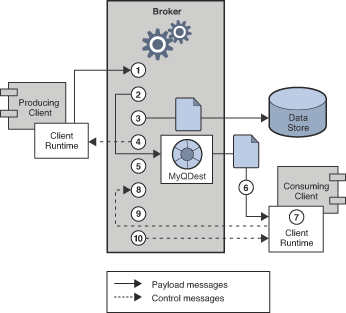

color = "red'
size> 102 Client Programming Model
This chapter describes the basics of Message Queue client programming. It covers the following topics:
This chapter focuses on the design and implementation of Java clients. By and large, C client design roughly parallels Java client design. The final section of this chapter summarizes the differences between Java and C clients. For a detailed discussion of programming Message Queue clients, see the Open Message Queue Developer’s Guide for Java Clients and the Open Message Queue Developer’s Guide for C Clients.
Messaging Domains
Messaging middleware allows components and applications to communicate by producing and consuming messages. The JMS API defines two patterns or messaging domains that govern this communication: point-to-point messaging and publish/subscribe messaging. The JMS API is organized to support these patterns.
Point-To-Point Messaging
In the point-to-point domain, message producers are called senders and consumers are called receivers. They exchange messages by means of a destination called a queue: senders produce messages to a queue; receivers consume messages from a queue. What distinguishes point-to-point messaging is that a message can be consumed by only one consumer.
Figure 2-1 shows the simplest messaging operation in the
point-to-point domain. MyQueueSender sends Msg1 to the queue
destination MyQueue1. Then, MyQueueReceiver obtains the message from
MyQueue1.
Figure 2-1 Simple Point-to-Point Messaging

Figure 2-2 shows a more complex picture of point-to-point
messaging to illustrate the possibilities offered by this domain. Two
senders, MyQSender1 and MyQSender2, use the same connection to send
messages to MyQueue1. MyQSender3 uses an additional connection to
send messages to MyQueue1. On the receiving side, MyQReceiver1
consumes messages from MyQueue1, and MyQReceiver2 and
MyQReceiver3, share a connection in order to consume messages from
MyQueue1.
|
Note
|
Support for multiple-consumer queues is a Message Queue feature (the JMS specification defines messaging behavior in the case of only one consumer accessing a queue). When multiple consumers access a queue, the load-balancing among them takes into account each consumer’s capacity and message processing rate. |
Figure 2-2 Complex Point-to-Point Messaging

This more complex picture exemplifies a number of additional points about point-to-point messaging.
-
More than one sender can produce and send messages to a queue. Senders can share a connection or use different connections, but they can all access the same queue.
-
More than one receiver can consume messages from a queue, but each message can be consumed by only one receiver. Thus
Msg1,Msg2, andMsg3are consumed by different receivers. (This is a Message Queue extension.) -
Receivers can share a connection or use different connections, but they can all access the same queue. (This is a Message Queue extension.)
-
Senders and receivers have no timing dependencies: the receiver can consume a message whether or not it was running when the sender produced and sent the message.
-
Messages are placed in a queue in the order they are produced, but the order in which they are consumed depends on factors such as message expiration date, message priority, whether a selector is used in consuming messages, and the relative message processing rate of the consumers.
-
Senders and receivers can be added and deleted dynamically at runtime, thus allowing the messaging system to expand or contract as needed.
The point-to-point domain offers a number of advantages:
-
Messages destined for a queue are always retained, even if there are no receivers.
-
Java clients can use a queue browser object to inspect the contents of a queue. They can then consume messages based on the information gained from this inspection. That is, although the consumption model is normally FIFO (first in, first out), receivers can consume messages that are not at the head of the queue by using message selectors. Administrative clients can also use the queue browser to monitor the contents of a queue.
-
The fact that multiple receivers can consume messages from the same queue allows you to use load-balancing to scale message consumption if the order in which messages are received is not important.
Publish/Subscribe Messaging
In the publish/subscribe domain, message producers are called publishers and message consumers are called subscribers. They exchange messages by means of a destination called a topic: publishers produce messages to a topic; subscribers subscribe to a topic and consume messages from a topic.
Figure 2-3 shows a simple messaging operation in the
publish/subscribe domain. MyTopicPublisher publishes Msg1 to the
destination MyTopic. Then, MyTopicSubscriber1 and
MyTopicSubscriber2 each receive a copy of Msg1 from MyTopic.
Figure 2-3 Simple Publish/Subscribe Messaging

While the publish/subscribe model does not require that there be more than one subscriber, two subscribers are shown in the figure to emphasize the fact that this domain allows you to broadcast messages. All subscribers to a topic get a copy of any message published to that topic.
Subscribers can be durable or non-durable. If a durable subscriber becomes inactive, the broker retains messages for it until the subscriber becomes active and consumes the messages. If a non-durable subscriber becomes inactive, the broker does not retain messages for it.
Figure 2-4 shows a more complex picture of
publish/subscribe messaging to illustrate the possibilities offered by
this domain. Several producers publish messages to the Topic1
destination. Several subscribers consume messages from the Topic1
destination. Unless, a subscriber is using a selector to filter
messages, each subscriber gets all the messages published to the topic
to which it is subscribed. In Figure 2-4, MyTSubscriber2
has filtered out Msg2.
Figure 2-4 Complex Publish/Subscribe Messaging

This more complex picture exemplifies a number of additional points about publish/subscribe messaging.
-
More than one publisher can publish messages to a topic. Publishers can share a connection or use different connections, but they can all access the same topic.
-
More than one subscriber can consume messages from a topic. Subscribers consume all messages published to a topic unless they use selectors to filter out messages or the messages expire before they are consumed.
-
Subscribers can share a connection or use different connections, but they can all access the same topic.
-
For durable subscribers, the broker retains messages for the subscribers while these subscribers are inactive.
-
Messages are placed in a topic in the order they are produced, but the order in which they are consumed depends on factors such as message expiration date, message priority, and whether a selector is used in consuming messages.
-
Publishers and subscribers have a timing dependency: a topic subscriber can consume only messages published after the subscriber has subscribed to the topic.
-
Publishers and subscribers can be added and deleted dynamically at runtime, thus allowing the messaging system to expand or contract as needed.
The main advantage of the publish/subscribe model is that it allows messages to be broadcast to multiple subscribers.
Understanding the JMS API
The JMS 2.0 API consists of four APIs: Simplified, Classic, Point-to-Point Domain, and Publish/Subscribe Domain. Each of the APIs defines interfaces that you can use to send or receive messages:
-
The Simplified API provides all the functionality of the Classic API but uses a simpler implementation that requires fewer interfaces. This is the Simplified API shown in column1 of Table 2-1.
-
The Classic API offers a single set or unified domain, which allows you to program a generic messaging client. The behavior of such a client is determined by the type of the destination to which it produces messages and from which it consumes messages. If the destination is a queue, messaging will behave according to the point-to-point pattern; if the destination is a topic, messaging will behave according to the publish/subscribe pattern. This is the Classic API shown in column 2 of Table 2-1.
-
The JMS 1.0 API defined two legacy domain specific APIs, one for Point-To-Point Messaging and one for Publish/Subscribe Messaging. These are the domain-specific API’s shown in columns 3 and 4 of Table 2-1. These API’s are superseded by the Classic and Simplified APIs and remain part of the specification only for backward compatibility.
Table 2-1 JMS Programming Domains and Objects
| Simplified API | Classic API | Domain-specific API for Point-to-Point Messaging | Domain-specific API for Publish/Subscribe Messaging |
|---|---|---|---|
|
|
|
|
|
|
|
|
|
|
|
|
+ |
|
|
|
|
|
|
|
|
|
|
|
For more information on how to use the Simplified API, see:
-
"Using the Simplified Java API" in Open Message Queue Developer’s Guide for Java Clients
Programming Objects
The following sections provide information on objects used to implement JMS messaging using the Simplified and Classic APIs.
|
Note
|
Two of these programming objects, connection factories and destinations, are shown to reside in an object store. This is to underline the fact that these objects are normally created, configured, and managed as administered objects. We assume that connection factories and destinations are created administratively (rather than programmatically) throughout this chapter. |
Simplified API Programming Objects
The Simplified API programming objects are shown in Figure 2-5. The figure shows, from the top down, how objects are derived, starting with the connection factory object.
Figure 2-5 Simplified API Programming Objects

Table 2-2 summarizes the steps required to send and receive messages. Note that steps 1 through 6 are the same for senders and receivers.
Table 2-2 Producing and Consuming Messages.
| Producing a Message | Consuming a Message |
|---|---|
1. The administrator creates a connection factory administered object. |
Same |
2. The administrator creates a physical destination and the administered object that corresponds to it. |
Same |
3. The client obtains a connection factory object through a JNDI lookup. |
Same |
4. The client obtains a destination object through a JNDI lookup. |
Same |
5. The client creates a |
Same |
5. The client sets the |
Same |
\7. The client creates a Optionally, the client can then configure delivery options (such as
|
The client creates a |
8. The client sends a message to a specified destination. |
The client consumes a message. |
Classic API Programming Objects
The Classic API programming objects are shown in Figure 2-6. The figure shows, from the top down, how objects are derived, starting with the connection factory object.
Figure 2-6 Classic API Programming Objects

Table 2-3 summarizes the steps required to send and receive messages. Note that steps 1 through 6 are the same for senders and receivers.
Table 2-3 Producing and Consuming Messages.
| Producing a Message | Consuming a Message |
|---|---|
1. The administrator creates a connection factory administered object. |
Same |
2. The administrator creates a physical destination and the administered object that corresponds to it. |
Same |
3. The client obtains a connection factory object through a JNDI lookup. |
Same |
4. The client obtains a destination object through a JNDI lookup. |
Same |
5. The client creates a connection. |
Same |
5. The client sets the |
Same |
6. The client creates a session and sets the properties that govern messaging reliability. |
Same |
7. The client creates a message producer. The destination can be
specified on the message producer or on the |
The client creates a message consumer for a specified destination. |
8. The client sends a message. |
The client consumes a message. |
JMS Programming Objects
The following sections describe the objects used by producers and consumers: connections, sessions, messages, and destinations. We will then complete the discussion of JMS objects by describing the production and consumption of messages.
ConnectionFactory
A connection factory object is used in the Simplified and Classic APIs to configure the behavior of all connections derived from it by setting its properties. For Message Queue, these specify the following information:
-
The name of the host on which the broker resides, the connection service desired, and the port through which the client is to access that service.
-
How automatic reconnection to the broker should be handled if the connection fails. This feature reconnects the client to the same (or, in a broker cluster, to a different broker) if a connection is lost.
-
The ID of any client that needs the broker to track its durable subscription.
-
The default name and password of any user attempting the connection. This information is used to authenticate the user and authorize operations if a password is not specified at connection time.
-
Whether broker acknowledgements should be suppressed for any clients that are not concerned with reliability.
-
How to manage the flow of control and payload messages between the broker and the client runtime.
-
How queue browsing should be handled (Java clients only).
-
Whether certain message header fields should be overridden.
It is possible to override connection factory properties from the command line used to start the client application. It is also possible to override properties for any given connection by explicitly setting properties for that connection.
You can use a connection object to create session objects, to set up an exception listener, or to obtain JMS version and JMS provider information.
Connection
In the Classic API, a client uses a connection factory object
(ConnectionFactory) to create a connection. A connection object
(Connection) represents a client’s active connection to the broker. It
uses the underlying Message Queue connection service that is either
started by default or is explicitly started by the administrator for
this client.
Both allocation of communication resources and authentication of the client take place when a connection is created. It is a relatively heavyweight object, and most clients do all their messaging with a single connection. Connections support concurrent use: any number of producers and consumers can share a connection.
JMSContext
In the Simplified API, a JMSContext object is an active connection to
a JMS provider and a single-threaded context for sending and receiving
messages. It combines the functionality of the Connection and
Session object to reduce the number of objects to send and receive
messages.
You can use a JMSContext object to:
-
Create multiple message producers and consumers, but you are restricted to using them serially.
-
Create and configure destinations for those clients that do not use administered objects to obtain references to existing destinations.
-
Create and configure temporary topics and queues; these are used as part of the request-reply pattern. See The Request-Reply Pattern.
-
Support transaction processing.
-
Define a serial order for producing or consuming messages.
-
Serialize the execution of message listeners for asynchronous consumers (see Consuming a Message).
-
Create queue browsers (Java clients only).
-
Define when messages are considered processed.
Session
In the Classic API, if the connection represents a communication channel between the client and the broker, a session marks a single conversation between them. A session object is a single-threaded context to create messages, message producers, and message consumers. When you create a session, you configure reliable delivery through a number of acknowledgement options or through transactions. For more information, see Reliable Message Delivery.
You can use a session object to:
-
Create multiple message producers and consumers for a single session, but you are restricted to using them serially.
-
Create and configure destinations for those clients that do not use administered objects to obtain references to existing destinations.
-
Create and configure temporary topics and queues; these are used as part of the request-reply pattern. See The Request-Reply Pattern.
-
Support transaction processing.
-
Define a serial order for producing or consuming messages.
-
Serialize the execution of message listeners for asynchronous consumers (see Consuming a Message).
-
Create queue browsers (Java clients only).
-
Define when messages are considered processed.
Message
The message object is use by all four JMS APIs. A JMS message is composed of three parts: a header, properties, and a body. You must understand this structure in order to compose a message properly and to configure certain messaging behaviors.
Message Header
A header is required of every JMS message. The header contains ten predefined fields, which are listed and described in Table 2-4.
Table 2-4 JMS-Defined Message Header
| Header Field | Description | Set By |
|---|---|---|
|
Specifies the name of the destination to which the message is sent. |
JMS provider |
|
Specifies whether the message is persistent. |
Client, per producer or per individual message produced. |
|
Specifies the time when the message will expire. |
Client, per producer or per individual message produced. |
|
Specifies the priority of the message within a 0 (low) to 9 (high) range. |
Client, per producer or per individual message produced. |
|
Specifies a unique ID for the message within the context of a JMS provider installation. |
JMS provider |
|
Specifies whether the message has already been delivered but not acknowledged. |
JMS provider |
|
Specifies the time when the JMS provider received the message. |
JMS provider |
|
A value that allows a client to define a correspondence between two messages. |
Client, if needed |
|
Specifies a destination where the consumer should send a reply. |
Client, if needed |
|
A value that can be evaluated by a message selector. |
Client, if needed |
As you can see from reading through this table, message header fields serve a variety of purposes: identifying a message, configuring the routing of messages, providing information about message handling, and so on.
One of the most important fields, JMSDeliveryMode, determines the
reliability of message delivery. This field indicates whether a message
is persistent.
-
Persistent messages. are guaranteed to be delivered and successfully consumed exactly once. Persistent messages are not lost if the message service fails.
-
Non-persistent messages are guaranteed to be delivered at most once. Non-persistent messages can be lost if the message service fails.
Some message header fields are set by the JMS provider (the Message Queue broker and/or client runtime) and others are set by the client. Message producers may need to configure header values to obtain certain messaging behaviors; message consumers may need to read header values in order to understand how the message was routed and what further processing it might need.
Three of the header fields (JMSDeliveryMode, JMSExpiration, and
JMSPriority) can be set at two different levels:
-
For all messages produced by a specific message producer.
-
For each message when it is produced.
If these fields are set at more than one level, values set when producing a message override those set for the message’s producer.
Names of constant used for message header fields vary with the language implementation. See the Open Message Queue Developer’s Guide for Java Clients or the Open Message Queue Developer’s Guide for C Clients for more information.
Message Properties
A message can also include optional header fields, called properties, specified as property name and property value pairs. Properties allow clients and providers to extend the message header and can contain any information that the client or the JMS provider finds useful to identify and process a message. Message properties allow a consuming client to ask that only those messages be delivered which fit a given criteria. For instance, a consuming client might indicate an interest for payroll messages concerning part-time employees located in New Jersey. The JMS provider will not deliver messages that do not meet the specified criteria.
The JMS specification defines nine standard properties. Some of these are set by the client and some by the JMS provider. Their names begin with the reserved characters "JMSX." The client or the JMS provider can use these properties to determine who sent a message, the identity of the application sending a message, the state of the message, how often and when it was delivered, transaction identification, and so forth. These properties are useful to the JMS provider in routing messages and in providing diagnostic information.
Message Queue defines a number of additional message properties. These properties are used to identify compressed messages and how messages should be handled if they cannot be delivered. For more information see "Managing Message Size" in Open Message Queue Developer’s Guide for Java Clients.
Message Body
The message body contains the data that clients want to exchange.
The JMS message body type determines what the body may contain and how it should be processed by the consumer, as specified in Table 2-5. The Session object includes a create method for each type of message body.
Table 2-5 Message Body Types
| Message Body Type | Description |
|---|---|
|
A message whose body contains a stream of Java primitive values. It is filled and read sequentially. |
|
A message whose body contains a set of name-value pairs. The order of entries is not defined. |
|
A message whose body contains a Java string, for example an XML message. |
|
A message whose body contains a serialized Java object. |
|
A message whose body contains a stream of uninterpreted bytes. |
|
A message that contains a header and properties but no body. |
Java clients can set a property to have the client runtime compress the body of a message being produced. The Message Queue runtime on the consumer side decompresses the message before delivering it.
Producing a Message
Messages are sent or published by a message producer, within the context
of a connection and session. Producing a message is fairly
straightforward, a client uses a message producer object
(MessageProducer or JMSProducer) to send messages to a physical
destination, represented in the API by a destination object.
You can use a producer to specify default values for the message header
fields that govern persistence, priority, and time-to-live. These
defaults are then used by all messages issuing from that producer unless
you override them by specifying an alternate destination when sending
the message or by setting alternate values for the header fields for a
given message. For a MessageProducer, you can optionally specify a
default destination that all the producer’s messages are sent to.
The message producer can also implement a request-reply pattern by
setting the JMSReplyTo message header field. For more information, see
The Request-Reply Pattern.
In addition,Message Queue producers can specify symbolic topic destination names that use wildcard characters. Messages issuing from such wildcard producers are sent to all destinations that match the symbolic destination name. See "Supported Topic Destination Names" in Open Message Queue Administration Guide.
Consuming a Message
Messages are received by a message consumer. A client uses the message
consumer object (MessageConsumer or JMSConsumer) to receive messages
from a specified physical destination, represented in the API as a
destination object.
When you create a consumer, you specify the destination from which it consumes messages.
Three factors affect how the broker delivers messages to a consumer:
-
Whether consumption is synchronous or asynchronous
-
Whether a selector is used to filter incoming messages
-
If messages are consumed from a topic destination, whether the subscriber is durable
These factors are described in the following sections.
Another factor that affects message delivery, the degree of reliability required by the messaging application, is described in Reliable Message Delivery.
In addition,Message Queue consumers can specify symbolic topic destination names that use wildcard characters. Messages are delivered to such wildcard consumers from all destinations that match the symbolic destination name. See "Supported Topic Destination Names" in Open Message Queue Administration Guide.
Synchronous and Asynchronous Consumers
A message consumer can support either synchronous or asynchronous consumption of messages.
-
Synchronous consumption means the consumer explicitly requests a message that has been delivered to the client runtime and then consumes it.
Depending on the method used to request messages, a synchronous consumer can choose to wait (indefinitely) until a message is delivered to the client runtime, to wait a specified amount of time for a message, or to return immediately if there is no message available to be consumed (messages that were successfully produced but which the broker has not finished processing). -
Asynchronous consumption means that the message is automatically handed off to a message listener object (
MessageListener)that has been registered with the consumer. The client consumes the message when a session thread invokes theonMessage()method of the message listener object.
Using Selectors to Filter Messages
A message consumer can use a message selector to have the message service deliver only those messages whose properties (see Message Properties) match specific selection criteria. You specify this criteria when you create the consumer.
Selectors use an SQL-like syntax to match against message properties. For example,
Java clients can also specify selectors when browsing a queue; this allows you to see which selected messages are waiting to be consumed.
Using Durable Subscribers
A durable subscriber is one for which the broker retains messages even when the subscriber becomes inactive.
Because the broker must maintain state for the subscriber and resume
delivery of messages when the subscriber is reactivated, the broker must
be able to identify a given subscriber throughout its comings and
goings. The subscriber’s identity is constructed from the clientID
property of the connection that created it and the subscriber name
specified when you create the subscriber.
The Request-Reply Pattern
You can combine producers and consumers in the same connection (or even session when using the unified API). In addition, the JMS API allows you to implement a request-reply pattern for your messaging operations by using temporary destinations. Temporary destinations are explicitly created and destroyed programmatically. They are maintained by the broker only for the duration of the connection in which they are created.
To set up the request-reply pattern you need to do the following:
-
Programmatically create a temporary destination where the consumer can send replies.
-
In the message to be sent, set the
JMSReplyTofield of the message header to that temporary destination.
When the message consumer processes the message, it examines the
JMSReplyTo field of the message to determine if a reply is required
and sends the reply to the specified destination.
The request-reply mechanism saves an administrator the trouble of creating a destination administered object or a physical destination for the reply, and makes it easy for the consumer to respond to the request. This pattern is useful when the producer must be sure that a request message has been handled before proceeding.
Figure 2-7 illustrates a request-reply pattern that sends messages to a topic and receives replies in a temporary queue.
Figure 2-7 Request/Reply Pattern

As the figure shows, MyTopicPublisher produces Msg1 to the
destination MyTopic. MyTopicSubsriber1 and MyTopicSubscriber2
consume the message and send a reply to MyTempQueue, from which
MyTempQueueReceiver retrieves it. This pattern might be useful for an
application that publishes pricing information to a large number of
subscribers and which queues their (reply) orders for sequential
processing.
Temporary destinations last only as long as the connection in which they are created. While any producer can produce messages to a temporary destination, the only consumers that can access a temporary destination are those created in the same connection in which the temporary destination was created.
Since the request/reply pattern depends on creating temporary destinations, you should not use this pattern in the following cases:
-
If you anticipate that the connection in which the temporary destination was created might terminate before the reply is sent.
-
If reply messages need to be persistent.
Reliable Message Delivery
Message delivery occurs in two hops: the first hop takes the message from the producer to a physical destination on the broker; the second hop takes the message from that destination to the consumer. Thus, a message can be lost in one of three ways: on its hop from the producer to the broker, on its hop from the broker to the consumer, and while it’s in broker memory (if the broker fails). Reliable delivery guarantees that delivery will not fail in any of these ways.
Two mechanisms are used to ensure reliable delivery:
-
The client can use acknowledgments or transactions to make sure that message production and consumption is successful.
-
The broker can store messages in a persistent data store so that if the broker fails before the message is consumed, the broker, upon recovery, can retrieve the stored copy of the message and retry the operation.
The following sections describe these two aspects of ensuring reliability.
|
Note
|
Reliable delivery only applies to messages for which the
|
Acknowledgements
Acknowledgements are messages sent between a client and the message service to ensure reliable delivery of messages. Acknowledgements are used differently for producers and for consumers.
In the case of message production, the broker confirms that it has
received the message, placed it in its destination, and stored it
persistently. The producer’s send() method blocks until it receives
this broker acknowledgement. Broker acknowledgements are transparent to
the client when persistent messages are sent.
In the case of message consumption, the client acknowledges that it has received delivery of a message from a destination and consumed it, before the broker can delete the message from that destination. JMS specifies different client acknowledgement modes that represent different degrees of reliability.
-
In the
AUTO_ACKNOWLEDGEmode, the session automatically acknowledges each message consumed by the client. The session thread blocks, waiting for the broker to confirm that it has processed the client acknowledgement for each consumed message. -
In the
CLIENT_ACKNOWLEDGEmode, the client explicitly acknowledges after one or more messages have been consumed by calling theacknowledge()method of a message object. This causes the session to acknowledge all messages that have been consumed by the session since the previous invocation of the method. The session thread blocks, waiting for the broker to confirm that it has processed the client acknowledgement.
Message Queue extends this mode by providing a method that allows a client to acknowledge receipt of one message only. -
In
DUPS_OK_ACKNOWLEDGEmode, the session acknowledges after a specified number of messages (default is 10) have been consumed. The session thread does not block waiting for the broker to confirm it has processed the client acknowledgement, because no broker confirmation is required in this mode. Although this mode guarantees that no message will be lost, it does not guarantee that no duplicate messages will be received, hence its name:DUPS_OK.
For clients that are more concerned with performance than reliability,
the Message Queue service extends the JMS API by providing a
NO_ACKNOWLEDGE mode. In this mode, the broker does not track client
acknowledgements, so there is no guarantee that a message has been
successfully processed by the consuming client. Choosing this mode may
give you better performance for non persistent messages that are sent to
non-durable subscribers.
Transactions
A transaction is a way of grouping the production and/or consumption of one or more messages into an atomic unit. The client and broker acknowledgement process described above applies, as well, to transactions. In this case, however, when a transaction commits, it implicitly performs the relevant broker or client acknowledgements. You cannot have an end-to-end transaction encompassing both the production and consumption of the same message.
The JMS specification supports both local and distributed transactions, as described below.
Local Transactions
A session can be configured as transacted, and the JMS API provides methods for initiating, committing, or rolling back local transactions.
As messages are produced or consumed within a local transaction, the message service tracks the various sends and receives, completing these operations only when the JMS client issues a call to commit the transaction. If a particular send or receive operation within the transaction fails, an exception is raised. The client code can handle the exception by ignoring it, retrying the operation, or rolling back the entire transaction. When a transaction is committed, all its operations are completed. When a transaction is rolled back, all successful operations are cancelled.
The scope of a local transaction is always a single session. That is, one or more producer or consumer operations performed in the context of a single session can be grouped into a single local transaction.
Distributed Transactions
The JMS specification also supports distributed transactions. That is, the production and consumption of messages can be part of a larger, distributed transaction that includes operations involving other resource managers, such as database systems. A distributed transaction manager, like the one supplied by GlassFish Server, must be available to support distributed transactions.
In distributed transactions, the distributed transaction manager tracks and manages operations performed by multiple resource managers (such as a message service and a database manager) using a two-phase commit protocol defined in the Java Transaction API (JTA), XA Resource API Specification. In the Java world, interaction between resource managers and a distributed transaction manager are described in the JTA specification.
Support for distributed transactions means that messaging clients can
participate in distributed transactions through the XAResource
interface defined by JTA. This interface defines a number of methods
used in implementing two-phase commit. While the API calls are made on
the client side, the JMS message service tracks the various send and
receive operations within the distributed transaction, tracks the
transactional state, and completes the messaging operations only in
coordination with a distributed transaction manager—provided by a Java
Transaction Service (JTS). As with local transactions, the client can
handle exceptions by ignoring them, retrying operations, or rolling back
an entire distributed transaction.
|
Note
|
Message Queue supports distributed transactions only when it is used as a JMS provider in a Java Enterprise Edition (Java EE) application server. For additional information on how to use distributed transactions, please consult the Java EE documentation furnished by your application server provider. |
Persistent Storage
The other aspect of reliability is ensuring that the broker does not lose persistent messages before they are delivered to consumers. This means that when a message reaches its physical destination, the broker must place it in a persistent data store. If the broker fails for any reason, it can recover the message later and deliver it to the appropriate consumers.
The broker must also persistently store durable subscriptions. Otherwise, in case of failure, it would not be able to deliver messages to durable subscribers who become active after a message has arrived in a topic destination.
Messaging applications that want to guarantee message delivery must specify messages as persistent and deliver them either to topic destinations with durable subscribers or to queue destinations.
The Message Queue Broker describes the default message store supplied by the Message Queue service and how an administrator can set up and configure an alternate store.
A Message’s Journey Through the System
By way of summarizing the material presented so far, this section describes how a message is delivered using the Message Queue service, from a producer to a consumer. In order to paint a complete picture, a further detail is needed: The messages handled by the system in the course of delivery fall into two categories:
-
Payload messages, which are the messages sent by producers to consumers.
-
Control messages, which are private messages passed between the broker and the client runtime to ensure that payload messages are successfully delivered and to control the flow of messages across a connection.
Message delivery is illustrated in Figure 2-8.
Figure 2-8 Message Delivery Steps

Message delivery steps for a persistent, reliably delivered message are as follows:
Message Production
\1. The client runtime delivers the message over the connection from the message producer to the broker.
Message Handling and Routing
\2. The broker reads the message from the connection and places it in the appropriate destination.
\3. The broker places the (persistent) message in the data store.
\4. The broker confirms receipt of the message to the client runtime of the message producer.
\5. The broker determines the routing for the message.
\6. The broker writes out the message from its destination to the appropriate connection, tagging it with a unique identifier for the consumer.
Message Consumption
\7. The message consumer’s client runtime delivers the message from the connection to the message consumer.
\8. The message consumer’s client runtime acknowledges consumption of the message to the broker.
Message End-of-Life
\9. The broker processes the client acknowledgement, and deletes the (persistent) message when all acknowledgements have been received.
\10. The broker confirms to the consumer’s client runtime that the client acknowledgement has been processed.
The broker can discard a message before it is consumed if the administrator deletes the message from a destination or if the administrator removes or redefines a durable subscriber, thereby causing a message in a topic destination to be removed without it being delivered. The broker can also discard a message before it is consumed if the message has expired, if memory limits have been reached, or if delivery fails due to a client exception. If you don’t want a message discarded in these situations, you can have the broker store the messages in a special destination called the dead message queue. Storing messages in the dead message queue allows you to troubleshoot the system and recover messages in any of these situations.
Design and Performance
The behavior of a Message Queue application depends on many factors: client design, connection configuration, broker configuration, broker tuning, and resource management. Some of these are the responsibility of the application developer; others are the concern of the Message Queue administrator.
In the best of possible worlds the developer should be aware of how the Message Queue service can support and scale the application design, and the administrator should be aware of the application’s design goals when it comes time to tune the application. Messaging behavior can be optimized through redesign as well as through careful monitoring and tuning. Thus, a key aspect of creating a good Message Queue application is for the developer and the administrator to understand what can be realized at each stage of the application life cycle and to share information about desired and observed behavior.
The Message Queue Broker explains how you can use the Message Queue service to support, manage, and tune messaging performance.
Working with SOAP Messages
Simple Object Access Protocol (SOAP) allows for the exchange of structured data (specified by an XML schema) between two peers in a distributed environment. Sun’s implementation of SOAP does not currently support reliable SOAP messaging nor does it support publishing SOAP messages. However, you can use the Message Queue service to achieve reliable SOAP messaging and, if desired, to publish SOAP messages. The Message Queue service does not deliver SOAP messages directly, but it allows you to wrap SOAP messages into JMS messages, to produce and consume these messages like normal JMS messages, and to extract the SOAP message from the JMS message.
Message Queue provides SOAP support through two packages:
javax.xml.messaging and com.sun.messaging.xml. You can use classes
implemented in these libraries to receive a SOAP message, to wrap a SOAP
message as a JMS message, and to extract a SOAP message from a JMS
message. The Java EE platform provides the package java.xml.soap,
which you can use to assemble and disassemble a SOAP message.
To achieve reliable SOAP messaging you need to implement the following sequence of actions:
-
Use the Message Transformer utility to convert the SOAP message into a JMS message.
-
Send the JMS message to the desired destination.
-
Consume the JMS message asynchronously or synchronously.
-
After the JMS message is consumed, use the Message Transformer utility to convert it into a SOAP message.
-
Use the SOAP with Attachments API for Java (SAAJ) API (defined in the
java.xml.soappackage) to disassemble the SOAP message.
For detailed information about SOAP messages and their processing, see "Working with SOAP Messages" in Open Message Queue Developer’s Guide for Java Clients.
Java and C Clients
Message Queue provides a C API to its messaging services to enable legacy C applications and C++ applications to participate in JMS-based messaging.
The JMS programming model is the foundation for the design of a Message Queue C client. The Open Message Queue Developer’s Guide for C Clients explains how this model is implemented by the C data types and functions.
Like the Java interface, the C interface supports the following features:
-
Publish/subscribe and point-to-point connections
-
Synchronous and asynchronous receives
-
CLIENT,AUTO, andDUPS_OKacknowledgement modes -
Local and distributed transactions
-
Session recover
-
Temporary topics and queues
-
Message selectors
However, it is important to understand that the Java Message Service specification is a standard for Java clients only; thus the C Message Queue API is specific to the Message Queue provider and cannot be used with other JMS providers. A messaging application that includes a C client cannot be handled by another JMS provider.
The C interface, does not support the following features:
-
The use of administered objects
-
Map, stream, or object message types
-
Consumer-based flow control
-
Queue browsers
-
JMS application server facilities (Connection Consumer, distributed transactions)
-
Receiving or sending SOAP messages
-
Receiving or sending compressed JMS messages
-
Auto-reconnect or failover, which allows the client runtime to automatically reconnect to a broker if a connection fails
-
The
NO_ACKNOWLEDGEmode